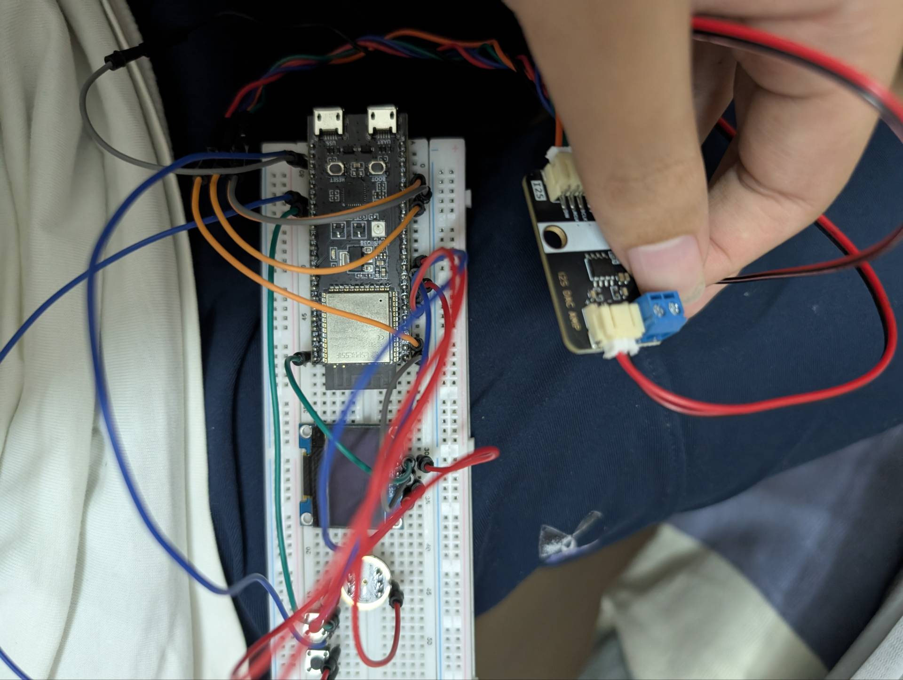

The main points this slide answers
The main points this slide focuses on
C/S Design Pattern
API calling
import requests
import base64
url = "http://localhost:5050/convert"
with open("input.wav", "rb") as audio_file:
audio_data = base64.b64encode(audio_file.read()).decode()
response = requests.post(url, json={"audio_data": audio_data})
with open("output.wav", "wb") as output_file:
output_file.write(response.content)

Start the server
$ python -m rvc_python api -p 5050 -l -mp \
./assests/weights/sakuna.pth -de cuda:0